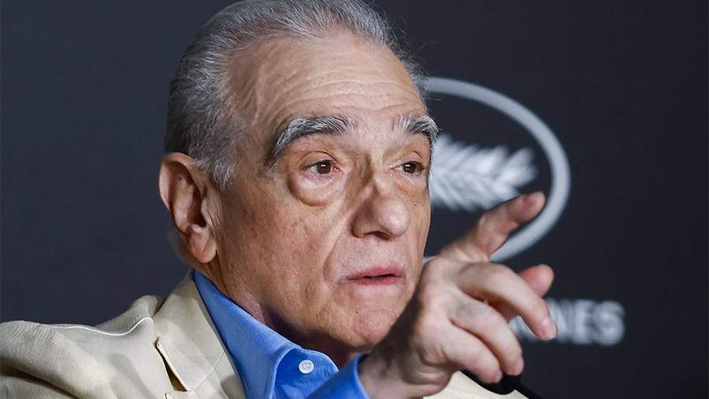

Режиссер Скорсезе в Риме объявил съемки фильма об Иисусе Христе по просьбе папы Римского.Американский режиссер Мартин Скорсезе объявил о скором начале съемок нового фильма об Иисусе Христе. Об этом в субботу, 27 мая, он рассказал в Риме на конференции, организованной католическим Джорджтаунским университетом и международным журналом иезуитов La Civiltà Cattolica.
«Я откликнулся на призыв папы Римского к деятелям искусства единственным известным мне способом — задумав и написав сценарий фильма об Иисусе. И я собираюсь приступить к его созданию», — сообщил кинорежиссер.
Он отметил воплощение фигуры Христа в фильме классика итальянского кино Пьера Паоло Пазолини «Евангелие от Матфея». Кроме того, Скорсезе рассказал о своем опыте работы над картинами на религиозную тему. Предыдущей работой режиссера на эту тематику был фильм «Молчание» 2016 года.
В 1988 году Мартин Скорсезе снял художественный фильм «Последнее искушение Христа» с Уиллемом Дефо в главной роли. В картине режиссер исследовал дуалистическую природу Иисуса Христа — Богочеловека. Фильм затронул щепетильные для церкви темы и навлек на себя массовую критику со стороны религиозных организаций и верующих различных направлений христианства.16 мая во Франции состоялась церемония открытия 76-го Каннского международного кинофестиваля, на которой Мартин Скорсезе представил свой новый фильм «Убийцы цветочной луны».